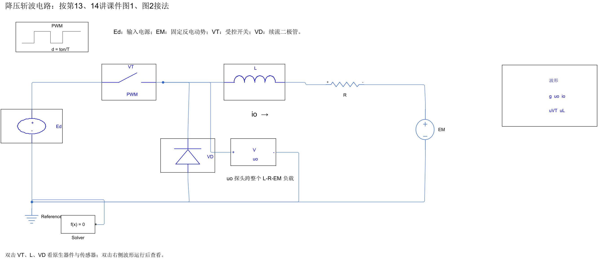
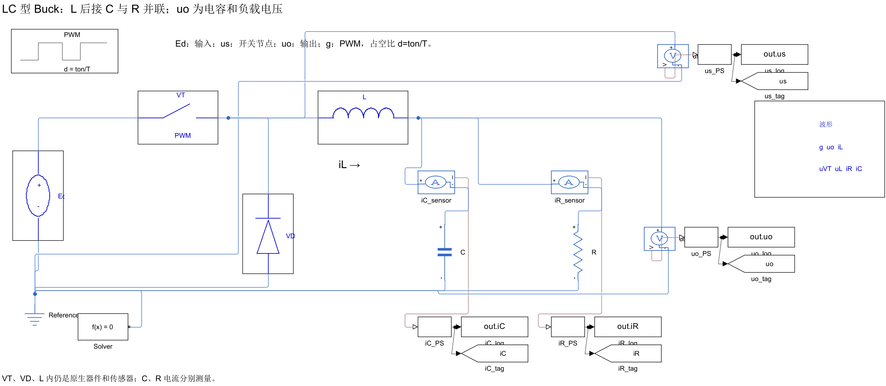

MATLAB / Simscape · 电力电子
两种 Buck，放在一起看
先找输出电压的测量点，再看电流归零后发生了什么。
断续工况 · 曲线来自实际传感器数据，幅值按各行独立缩放。
01 / L-R-EM
断流后，uo 回到 EM
电感和负载电流都是 io。归零时 VT、VD 均截止，电阻、电感压降接近零，整个负载两端 uo≈EM，管压 uVT≈Ed−EM。
02 / LC
iL 归零，负载仍有电流
uo 测输出电容两端。归零区间 iL≈0，而 iR>0、iC≈−iR，电容继续向电阻供电；us≈uo，管压 uVT≈Ed−uo。
单独看两张原生电路图


参数与读图说明
| 参数 | L-R-EM 连续 / 断续 | LC 连续 / 断续 |
|---|---|---|
| Ed；T；d | 100 V；1 ms；1/2 | 100 V；1 ms；1/2 |
| L | 10 mH / 1 mH | 10 mH / 10 mH |
| R | 5 Ω / 5 Ω | 10 Ω / 100 Ω |
| EM；C | 30 V；无 C | 无 EM；1000 μF |
两类电路的参数各自选取，不是同参数单变量实验。两图的 uo 测量点不同，幅值也独立归一化。原生 Scope 中的 LC 输出纹波经过放大显示；符号图保留原始传感器曲线。
四种工况均已实际运行。此页展示保存结果，重新仿真需要 MATLAB R2024b、Simulink、Simscape 及相应电气库。模型不含实物反向恢复、开关速度和杂散参数。